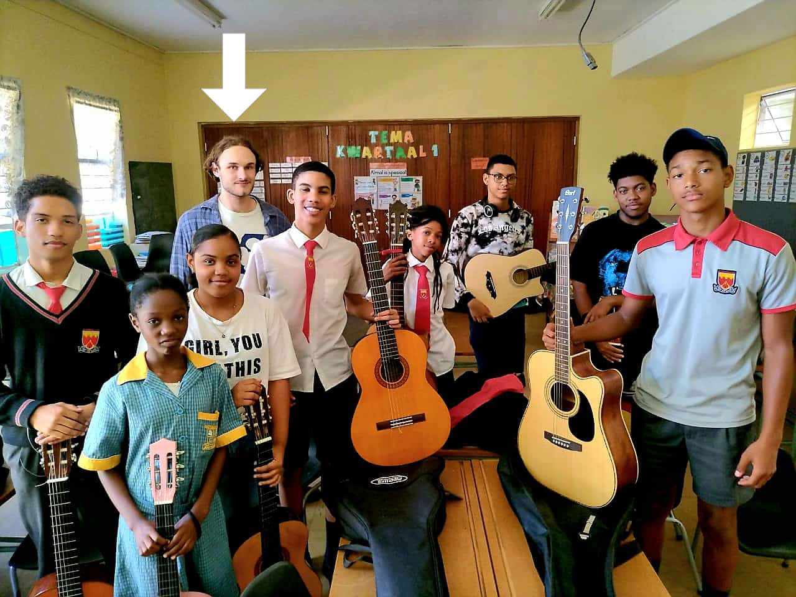

Teaching English with patience, purpose - and music.
To Whom It May Concern,
I am a patient and dedicated teacher who enjoys helping students build confidence in English through clear explanations, encouragement, and consistent practice. I believe students learn best in a positive environment where they feel comfortable participating.
Music & Extracurriculars: In addition to English, I teach practical music and guitar. I would be happy to support music activities, performances, or events that encourage creativity among students.
I am calm, reliable, and value preparation, teamwork, and professionalism. I look forward to contributing to your teaching team.
Warm Regards,
Nick Olivier
忍耐、目的、そして音楽と共に英語を教える。
採用ご担当者様、
私は忍耐強く献身的な教師であり、明確な説明、励まし、一貫した練習を通じて、生徒が英語に自信を持てるようサポートすることに喜びを感じています。生徒は、安心して参加できるポジティブな環境でこそ、最もよく学ぶことができると信じています。
音楽と課外活動： 英語の指導に加えて、実用音楽やギターも教えています。生徒の創造力を育む音楽活動、パフォーマンス、または学校行事を喜んでサポートさせていただきます。
私は穏やかで信頼できる性格であり、事前の準備、チームワーク、そしてプロ意識を大切にしています。貴校の教育チームに貢献できる日を楽しみにしています。
敬具
ニコラス・オリビエ

인내, 목적, 그리고 음악으로 영어를 가르칩니다.
채용 담당자님께,
저는 명확한 설명과 격려를 통해 학생들이 영어에 자신감을 가질 수 있도록 돕는 인내심 강하고 헌신적인 교사입니다. 학생들이 편안하게 참여할 수 있는 긍정적인 환경에서 가장 잘 배울 수 있다고 믿습니다.
음악 및 특별 활동: 영어 교육 외에도 실용 음악과 기타를 가르칩니다. 학생들의 창의력을 키워줄 수 있는 음악 활동이나 소규모 학교 행사를 기꺼이 지원하겠습니다.
저는 차분하고 신뢰할 수 있으며, 교실에서의 철저한 준비와 팀워크를 중요하게 생각합니다. 귀교의 교육 팀에 합류하기를 고대합니다.
감사합니다.
니콜라스 올리비에 드림
以耐心、目标和音乐教授英语。
尊敬的招聘主管：
我是一名耐心且有责任心的老师，喜欢通过清晰的解释、鼓励和持续的练习来帮助学生建立英语自信。我相信学生在可以毫无压力地参与的积极环境中学习效果最好。
音乐与课外活动： 除了英语，我还教授实用音乐和吉他。我非常乐意协助音乐活动、学生表演或校园活动，以培养学生的创造力。
我性格沉稳可靠，非常注重备课、团队合作及专业素养。希望能有机会加入贵校的教学团队。
诚挚地，
Nick Olivier
Giảng dạy tiếng Anh bằng sự kiên nhẫn, mục tiêu - và âm nhạc.
Kính gửi Ban tuyển dụng,
Tôi là một giáo viên kiên nhẫn, tận tâm, thích giúp học sinh xây dựng sự tự tin qua việc giải thích rõ ràng, động viên và thực hành thường xuyên. Tôi tin học sinh sẽ học tốt nhất trong môi trường tích cực, nơi các em cảm thấy thoải mái tham gia.
Âm nhạc & Ngoại khóa: Ngoài tiếng Anh, tôi còn dạy âm nhạc và guitar. Tôi rất sẵn lòng hỗ trợ các hoạt động âm nhạc, biểu diễn hoặc sự kiện nhằm khuyến khích sự sáng tạo của học sinh.
Tôi là người điềm tĩnh, đáng tin cậy, đề cao sự chuẩn bị, làm việc nhóm và tính chuyên nghiệp. Rất mong được đóng góp vào đội ngũ giáo viên của trường.
Trân trọng,
Nick Olivier